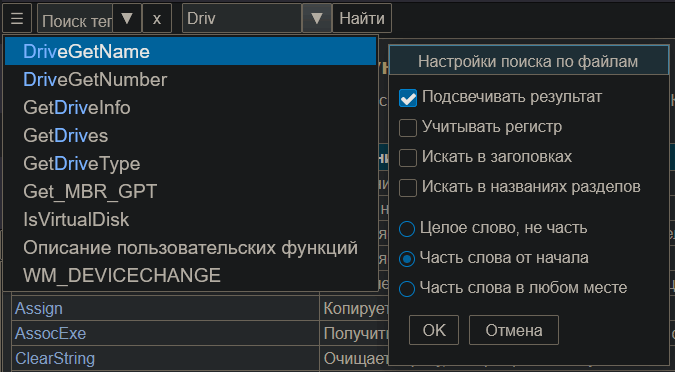

Reference
Назначение
Справочник, контент которого может быть настроен под свои нужды.

Справочник это программа для телефона выдающая контент как справочный материал в микробраузере (в веб-гаджете) и обеспечивающая поиск и удобное управление (программная надстройка). Готовый комплект это индивидуальная справка, но исходник или метод перепаковки позволяют создать собственную справку на любую тему.
Как использовать приложение в телефоне
Использование
Панель сверху имеет поле поиска по файлам. В настройках можно активировать поле поиска по тегам, но оно менее актуально, поэтому скрыто по умолчанию.
Поиск по файлам
Здесь выполняется поиск по всем файлам справки, где встречается искомое слово. Результатов может быть очень много и они могут не уместится на экране. В меню есть пункт настройки поиска. Здесь можно сузить число результатов или наоборот расширить. Требуется нажать кнопку "Найти", чтобы активировать принудительный поиск. Если результаты не умещаются в окно и нет прокрутки пунктов окна, то переоткройте результат стрелкой (треугольником рядом) раскрывающегося списка.
Программа сохраняет поисковые запросы, чтобы легче делать выбор.
Вызов истории поисковых запросов выполняется двумя способами: когда поле пусто и нечего искать, то предлагается список запросов, также в результатах первый пункт (жёлтый) предлагает показать меню истории.
При вводе 2-х и более символов появляется список автозавершения слова, т.е. предлагаются возможные варианты для поиска. Причём если стоят галки Искать в заголовках и Искать в названиях разделов, то используется сокращённый список, только тех слов, которые есть в названиях заголовков и разделов.
Поиск поддерживает регулярные выражения, например \b\d{3}\b позволит найти трёхзначные числа.
Настройки поиска по файлам
Учитывать регистр, при поиске "АБ" не будут найдены "аб" или "Аб" или "аБ".
Подсвечивать результат - искомое будет выделено цветным текстом.
Искать в заголовках - поиск производится не по всему файлу, а только внутри тегов <title>...</title>
Искать в названиях разделов - поиск производится не по всему файлу, а только внутри тегов <h1>...</h1> (также h2, h3 и т.д.)
Сохранять настройки - каждый раз при открытии будут использоваться сохранённые настройки
Скрыть 'Поиск тегов' - редко используемый способ поиска, поэтому добавлена возможность скрыть
Целое слово, не часть - слово не будет являться часть, например при поиске слова "предмет" не будут найдены "предметы", при слове "ток" не выпадет "поток".
Часть слова от начала - искомое может быть частью слова но начало всегда совпадает, т.е. при поиске "предмет" будут найдены "предметы", но при слове "ток" не выпадет "поток", так как совпадение не от начала. Это самый удачный поиск, так как окончания теперь не мешают искать слова одинаковые по смыслу.
Часть слова в любом месте - при поиска "на" будет найден "канал", "настройка", "напряжение", "фонарь".
Поиск по тегам
Теги это заранее используемые слова связанные с переходом к странице наилучшего выбора. Здесь при меньших затратах наилучший представленный результат. Результат выпадает при вводе 2-х символов. Скорость поиска мгновенная. Но проблема, что теги не так качественно проработаны.
Перепаковка
Вы можете перепаковать установочный файл apk с помощью "APK.Tool.GUI.v3.0.2.0" и заменить хоть весь контент в папке "\assets\www\data\". Программа ссылается на файл index.htm, остальные файлы открываются из него как в браузере. Но есть ещё папка "p", в которой файлы определяют поиск: s.txt - файл поиска по тегам и f.txt - список html-файлов в папке "\assets\www\data\" без расширения ".htm", эти пути используются для перечисления файлов, в которых будет происходить поиск. Суть формата строк s.txt - "тег1,тег2,тег3|Пункт|файл", где тег1,тег2,тег3 это перечисление тегов которые вводит пользователь в поле поиска, и когда находит строки содержащие этот тег, то в меню добавляется пункт "Пункт", а при клике на нём откроется файл "файл".
cfg0 - файл настроек по умолчанию, представляет число из набора битовых флагов. После чтения создаётся копия файла в кеше для последующего использования.
hstr0 - история поисковых запросов при первом запуске. После чтения создаётся копия файла в кеше для последующего использования.
Если требуется ответвление, то есть создать другой тип справки на основе текущего APK, то найти имя программы без учёта регистра в js-скриптах и заменить на новое.
cmp - сокращённый список автозавершения по заголовкам и разделам, ~500 слов
cmpa - полный список автозавершения по всем словам справки, ~5000 слов
К словам из списка автозавершения применён "Стемминг" - удаление суффиксов и окончаний для актуального поиска.
Исходник
Ссылка на исходник https://forums.spiderbasic.com/viewtopic.php?p=9491#p9491
Используется SpiderBasic, демоверсия которого позволяет компилировать код до 800 строк. Текущий исходник 660 строк (при удалении комментариев и пустых строк)